Part 1 — Fun with Filters
1.1 Convolutions from Scratch
Implemented convolution in two versions:
- Four nested loops (naive).
- Optimized two-loop version using row-wise or separable operations where applicable.
scipy.signal.convolve2d.
Code
import numpy as np
import cv2
def conv2d(image, kernel):
H, W = image.shape
kH, kW = kernel.shape
padH, padW = kH // 2, kW // 2
kernel_flipped = np.flipud(np.fliplr(kernel))
padded_image = np.pad(image, ((padH, padW), (padH, padW)),
mode='constant', constant_values=0)
output = np.zeros((H, W))
for i in range(H):
for j in range(W):
sum_val = 0
for m in range(kH):
for n in range(kW):
sum_val += padded_image[i+m, j+n] * kernel_flipped[m, n]
output[i, j] = sum_val
return output
def conv2d_fast(image, kernel):
H, W = image.shape
kH, kW = kernel.shape
padH, padW = kH // 2, kW // 2
kernel_flipped = np.flipud(np.fliplr(kernel))
padded_image = np.pad(image, ((padH, padW), (padH, padW)),
mode='constant', constant_values=0)
output = np.zeros((H, W))
for i in range(H):
for j in range(W):
region = padded_image[i : i + kH, j : j + kW]
output[i, j] = np.sum(region * kernel_flipped)
return output
# Example test
image = np.array([[1,2,3],[4,5,6],[7,8,9]])
kernel = np.array([[-1,0,1],[-1,0,1],[-1,0,1]])
print(conv2d_fast(image, kernel))
# Apply to real image
img = cv2.imread("myself.jpg", cv2.IMREAD_GRAYSCALE)
cv2.imwrite("myself_gray.jpg", img)
myKernel = np.outer(np.arange(-4,5), np.ones(9))
MyImage = conv2d_fast(img, myKernel)
MyImage = cv2.normalize(MyImage, None, 0, 255, cv2.NORM_MINMAX)
MyImage = MyImage.astype(np.uint8)
cv2.imwrite("myself_conved.jpg", MyImage)Results
Output images generated from the convolution:
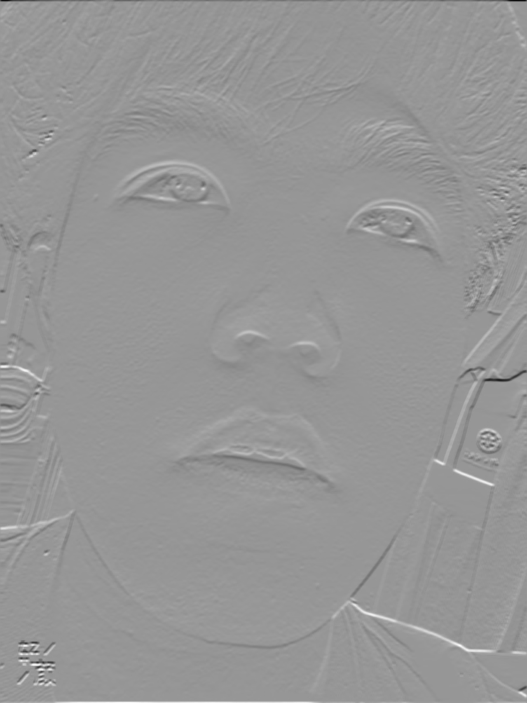
Method Comparison
| Method | Notes |
|---|---|
| Four-loops | Correct, slow |
| Two-loops | Faster |
| scipy.signal.convolve2d | Fastest |
Boundary Handling Notes
- Zero padding: Fill with zeros outside the border; may cause dark edges.
- Symmetric padding: Mirror the border values; preserves edge information best.
- Periodic padding: Repeat the image cyclically; may introduce tiling artifacts.
Conclusion: Symmetric padding gives the best results.
1.2 Finite Difference & Gradient
Compute partial derivatives in $x$ and $y$ via finite difference operators $D_x$ and $D_y$, form the gradient magnitude, and produce a binarized edge image by thresholding the magnitude.
Code (Dx, Dy, magnitude)
import cv2
import numpy as np
from scipy.signal import convolve2d
img = cv2.imread("myself.jpg", cv2.IMREAD_GRAYSCALE)
Dx = np.array([[-1, 0, 1],
[-1, 0, 1],
[-1, 0, 1]]) # Sobel-like operator
Dy = np.array([[-1, -1, -1],
[0, 0, 0],
[1, 1, 1]])
DxImage = conv2d_fast(img, Dx)
DxImage_show = cv2.normalize(DxImage, None, 0, 255, cv2.NORM_MINMAX)
DxImage_show = DxImage_show.astype(np.uint8)
cv2.imwrite("myself_Dx.jpg", DxImage_show)
DyImage = conv2d_fast(img, Dy)
DyImage_show = cv2.normalize(DyImage, None, 0, 255, cv2.NORM_MINMAX)
DyImage_show = DyImage_show.astype(np.uint8)
cv2.imwrite("myself_Dy.jpg", DyImage_show)
grad = np.sqrt(DxImage.astype(float)**2 + DyImage.astype(float)**2)
grad = cv2.normalize(grad, None, 0, 255, cv2.NORM_MINMAX)
grad = grad.astype(np.uint8)
cv2.imwrite("myself_grad.jpg", grad)
thresh_value = 20
_, binary = cv2.threshold(grad, thresh_value, 255, cv2.THRESH_BINARY)
cv2.imwrite("myself_grad_binary.jpg", binary)Visualization
Show Dx, Dy, magnitude, and binary edge images
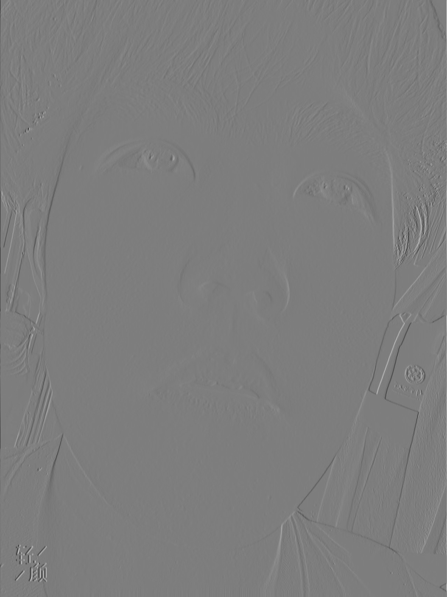
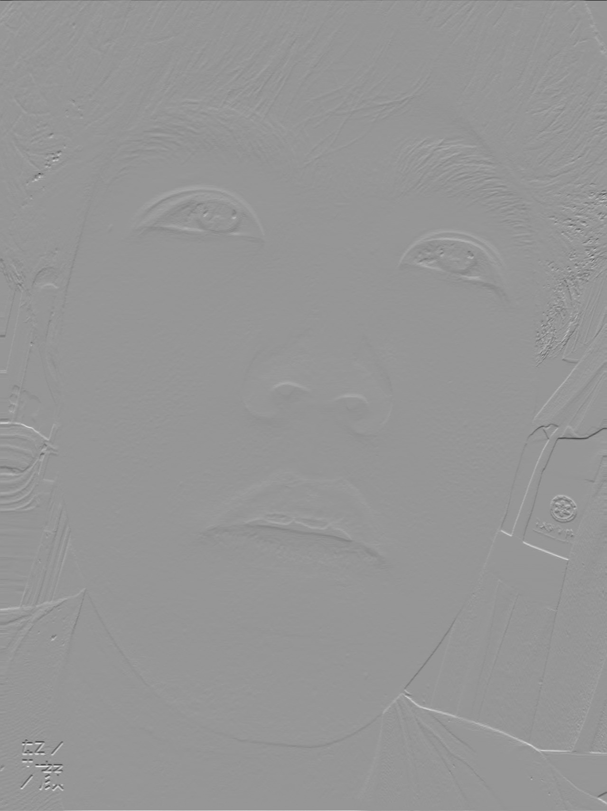
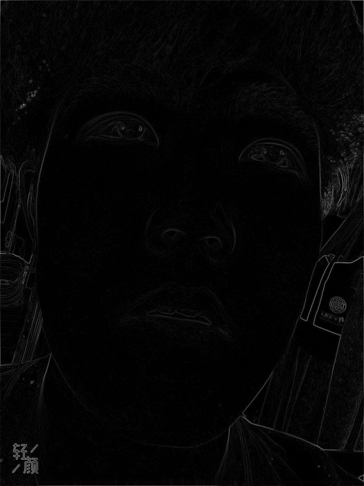
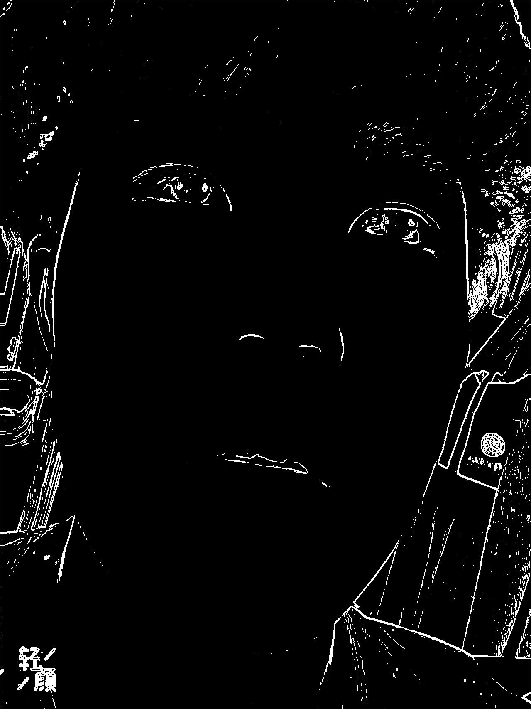
1.3 Derivative of Gaussian (DoG)
Build a DoG filter by convolving a Gaussian with $D_x$ and $D_y$, and show that using the DoG yields smoother edges than raw difference operators.
Code (create DoG filters)
import cv2
import numpy as np
from scipy.signal import convolve2d
import matplotlib.pyplot as plt
gaussian_kernel_1d = cv2.getGaussianKernel(ksize=5, sigma=1)
gaussian_kernel_2d = gaussian_kernel_1d @ gaussian_kernel_1d.T
Dx = np.array([[-1, 0, 1],
[-1, 0, 1],
[-1, 0, 1]])
Dy = np.array([[-1, -1, -1],
[0, 0, 0],
[1, 1, 1]])
DoGx = convolve2d(gaussian_kernel_2d, Dx, mode="full")
DoGy = convolve2d(gaussian_kernel_2d, Dy, mode="full")
for i, (kernel, name) in enumerate([(DoGx, "DoGx"), (DoGy, "DoGy")]):
kernel_img = cv2.normalize(kernel, None, 0, 255, cv2.NORM_MINMAX)
kernel_img = kernel_img.astype(np.uint8)
cv2.imwrite(f"{name}.jpg", kernel_img)
plt.subplot(1, 2, i + 1)
plt.imshow(kernel_img, cmap="gray")
plt.title(name)
plt.axis("off")
plt.show()
Code
import cv2
import numpy as np
from scipy.signal import convolve2d
gaussian_kernel_1d = cv2.getGaussianKernel(ksize=5, sigma=1)
gaussian_kernel_2d = gaussian_kernel_1d @ gaussian_kernel_1d.T
img = cv2.imread("myself.jpg", cv2.IMREAD_GRAYSCALE)
blur = convolve2d(img,gaussian_kernel_2d, mode="same", boundary="fill", fillvalue=0)
Dx = np.array([[-1, 0, 1],
[-1, 0, 1],
[-1, 0, 1]])
Dy = np.array([[-1, -1, -1],
[ 0, 0, 0],
[ 1, 1, 1]])
DxImage = convolve2d(blur, Dx, mode="same", boundary="fill", fillvalue=0)
DyImage = convolve2d(blur, Dy, mode="same", boundary="fill", fillvalue=0)
grad = np.sqrt(DxImage.astype(float)**2 + DyImage.astype(float)**2)
grad = cv2.normalize(grad, None, 0, 255, cv2.NORM_MINMAX)
grad = grad.astype(np.uint8)
thresh_value = 20
_, binary = cv2.threshold(grad, thresh_value, 255, cv2.THRESH_BINARY)
cv2.imwrite("myself_blur_grad_binary.jpg", binary)
Kx = convolve2d(gaussian_kernel_2d, Dx, mode="full")
Ky = convolve2d(gaussian_kernel_2d, Dy, mode="full")
Ix = convolve2d(img, Kx, mode="same", boundary="fill", fillvalue=0)
Iy = convolve2d(img, Ky, mode="same", boundary="fill", fillvalue=0)
grad = np.sqrt(Ix**2 + Iy**2)
grad = cv2.normalize(grad, None, 0, 255, cv2.NORM_MINMAX).astype(np.uint8)
thresh_value = 30
_, binary = cv2.threshold(grad, thresh_value, 255, cv2.THRESH_BINARY)
cv2.imwrite("myself_Dog.jpg", binary)
Visualization
Results of Gaussian kernel, DoG filters, and edge responses.
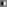
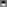
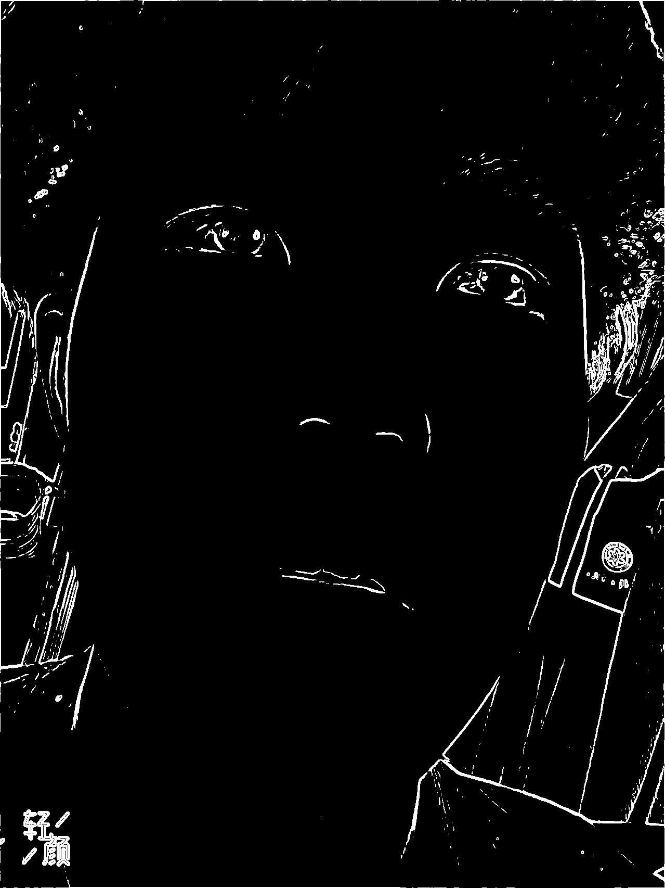
Observation: Compared with the raw difference operators, the edges obtained after Gaussian smoothing (DoG) are less noisy and more continuous. This shows that applying Gaussian blur before differentiation improves the edge detection results significantly.
Part 2 — Fun with Frequencies
2.1 Image Sharpening
Implement unsharp masking: $I_{sharp} = I + \alpha (I - G_\sigma * I)$, where $G_\sigma$ is a Gaussian blur and $\alpha$ controls the strength. I also derived an equivalent single-kernel convolution to implement the same effect in one pass.
Code (two-step)
import cv2
import numpy as np
from scipy.signal import convolve2d
img = cv2.imread("taj.jpg", cv2.IMREAD_GRAYSCALE).astype(float)
gaussian_kernel_1d = cv2.getGaussianKernel(ksize=9, sigma=2)
G = gaussian_kernel_1d @ gaussian_kernel_1d.T
G /= G.sum()
I_blur = convolve2d(img, G, mode="same", boundary="symm")
H = img - I_blur
alpha = 1.5
I_sharp = img + alpha * H
I_sharp = np.clip(I_sharp, 0, 255).astype(np.uint8)
cv2.imwrite("taj_sharp.jpg", I_sharp)
Code (one-step)
import cv2
import numpy as np
from scipy.signal import convolve2d
img = cv2.imread("taj.jpg", cv2.IMREAD_GRAYSCALE).astype(float)
gaussian_kernel_1d = cv2.getGaussianKernel(ksize=9, sigma=2)
G = gaussian_kernel_1d @ gaussian_kernel_1d.T
G /= G.sum()
imgBlur = convolve2d(img, G, mode="same", boundary="symm")
cv2.imwrite("taj_blur.jpg", imgBlur)
size = 9
delta = np.zeros((size, size), dtype=np.float32)
delta[size // 2, size // 2] = 1.0
alpha = 1.5
X = (1 + alpha) * delta - alpha * G
I_sharp = convolve2d(img, X, mode="same", boundary="symm")
I_sharp = np.clip(I_sharp, 0, 255).astype(np.uint8)
cv2.imwrite("taj_blur_sharp.jpg", I_sharp)
Visualization
Show the blurred image, extracted high-frequency (I - G*I), and the sharpened result for the Taj Mahal and a second image of my choice.
Taj Mahal Results

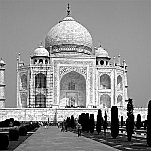
My Photo Results
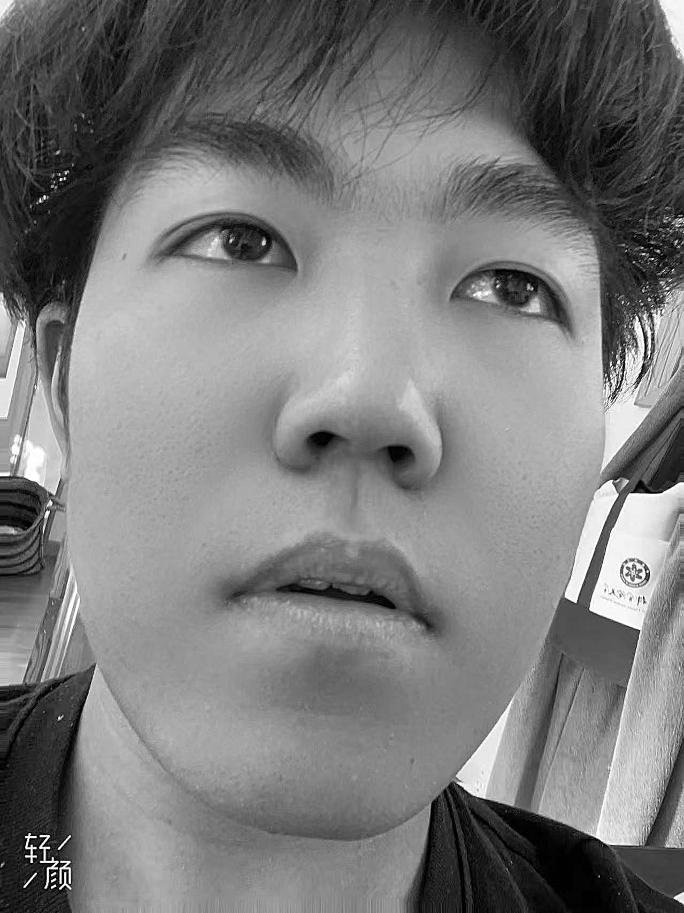
2.2 Hybrid Images
Create hybrid images by combining low-frequency content of one image with the high-frequency content of another. For one hybrid example show the full pipeline including Fourier analysis (log magnitude spectrum) of inputs and intermediate filtered images.
Code (hybrid image pipeline)
import matplotlib.pyplot as plt
from scipy.signal.windows import gaussian
from scipy.signal import convolve2d
from align_image_code import align_images
import cv2
import numpy as np
# First load images
# low sf
# im1 = plt.imread('./DerekPicture.jpg')/255.
im1 = plt.imread('./cat.jpg')
# high sf
# im2 = plt.imread('./nutmeg.jpg')/255
im2 = plt.imread('./dog.jpg')
# Next align images (this code is provided, but may be improved)
im2_aligned, im1_aligned = align_images(im2, im1)
im1_gray = cv2.cvtColor((im1_aligned * 255).astype(np.uint8), cv2.COLOR_RGB2GRAY)
im2_gray = cv2.cvtColor((im2_aligned * 255).astype(np.uint8), cv2.COLOR_RGB2GRAY)
im1_gray = im1_gray.astype(np.float32) / 255.0
im2_gray = im2_gray.astype(np.float32) / 255.0
def save_fft(img, filename, title="FFT", cmap="gray"):
f = np.fft.fft2(img)
fshift = np.fft.fftshift(f)
magnitude = np.log(1 + np.abs(fshift)) # log 压缩
plt.figure()
plt.imshow(magnitude, cmap=cmap)
plt.title(title)
plt.axis("off")
plt.savefig(filename, bbox_inches="tight", pad_inches=0)
plt.close()
## You will provide the code below. Sigma1 and sigma2 are arbitrary
## cutoff values for the high and low frequencies
def hybrid_image(img1, img2, sigma1, sigma2):
g1 = cv2.getGaussianKernel(ksize=15, sigma=sigma1)
G1 = g1 @ g1.T
G1 /= G1.sum()
low_f = convolve2d(img1, G1, mode="same", boundary="symm")
g2 = cv2.getGaussianKernel(ksize=5, sigma=sigma2)
G2 = g2 @ g2.T
G2 /= G2.sum()
low_f2 = convolve2d(img2, G2, mode="same", boundary="symm")
high_f = img2 - low_f2
result = low_f + high_f * 7.5
result = np.clip(result, 0, 1)
return (result * 255).astype(np.uint8), (low_f * 255).astype(np.uint8), (high_f * 255).astype(np.uint8)
sigma1 = 5
sigma2 = 0.5
hybrid, low_f, high_f = hybrid_image(im1_gray, im2_gray, sigma1, sigma2)
cv2.imwrite("hybrid_animal.jpg", hybrid)
cv2.imwrite("low_animal.jpg", low_f)
cv2.imwrite("high_animal.jpg", high_f)
plt.figure(); plt.imshow(hybrid, cmap='gray'); plt.title("Hybrid Image"); plt.axis("off")
save_fft(im1_gray, "fft_input1.jpg", "FFT of input1 (low-pass source)")
save_fft(im2_gray, "fft_input2.jpg", "FFT of input2 (high-pass source)")
save_fft(low_f, "fft_low_pass.jpg", "FFT of low-pass image")
save_fft(high_f, "fft_high_pass.jpg", "FFT of high-pass image")
save_fft(hybrid/255.0, "fft_hybrid.jpg", "FFT of hybrid image")
plt.show()
def pyramids(img, N=5, prefix="pyramid"):
gaussian_pyr = [img.astype(np.float32) / 255.0 if img.dtype == np.uint8 else img.astype(np.float32)]
# ---- Gaussian Pyramid ----
for i in range(1, N):
gaussian_pyr.append(cv2.pyrDown(gaussian_pyr[i - 1]))
# save Gaussian Pyramid
gauss_vis = []
for i, g in enumerate(gaussian_pyr):
g_show = (g * 255).astype(np.uint8)
cv2.imwrite(f"{prefix}_gaussian_{i}.jpg", g_show)
gauss_vis.append(cv2.cvtColor(g_show, cv2.COLOR_GRAY2BGR) if g_show.ndim == 2 else g_show)
# ---- Laplacian Pyramid ----
laplacian_pyr = []
for i in range(N - 1):
size = (gaussian_pyr[i].shape[1], gaussian_pyr[i].shape[0])
upsampled = cv2.pyrUp(gaussian_pyr[i + 1], dstsize=size)
lap = cv2.subtract(gaussian_pyr[i], upsampled)
laplacian_pyr.append(lap)
laplacian_pyr.append(gaussian_pyr[-1])
lap_vis = []
for i, l in enumerate(laplacian_pyr):
l_norm = cv2.normalize(l, None, 0, 255, cv2.NORM_MINMAX)
l_show = l_norm.astype(np.uint8)
cv2.imwrite(f"{prefix}_laplacian_{i}.jpg", l_show)
lap_vis.append(cv2.cvtColor(l_show, cv2.COLOR_GRAY2BGR) if l_show.ndim == 2 else l_show)
gauss_concat = np.hstack([cv2.resize(g, (gauss_vis[0].shape[1], gauss_vis[0].shape[0])) for g in gauss_vis])
lap_concat = np.hstack([cv2.resize(l, (lap_vis[0].shape[1], lap_vis[0].shape[0])) for l in lap_vis])
cv2.imwrite(f"{prefix}_gaussian_all.jpg", gauss_concat)
cv2.imwrite(f"{prefix}_laplacian_all.jpg", lap_concat)
return gaussian_pyr, laplacian_pyr
## Compute and display Gaussian and Laplacian Pyramids
## You also need to supply this function
N = 5 # suggested number of pyramid levels (your choice)
pyramids(hybrid, N)Examples


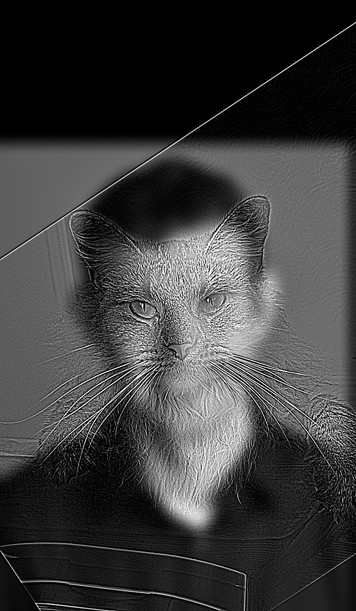
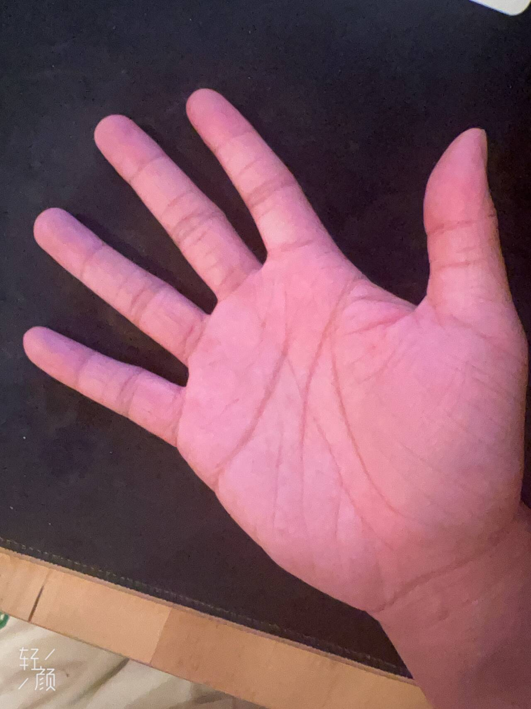
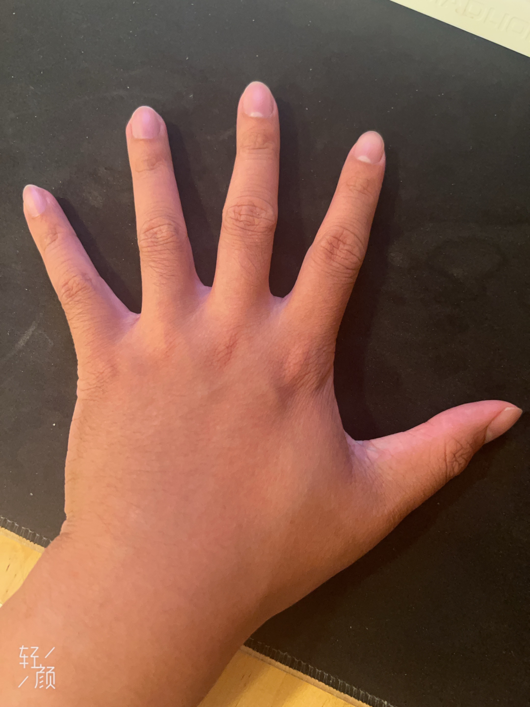
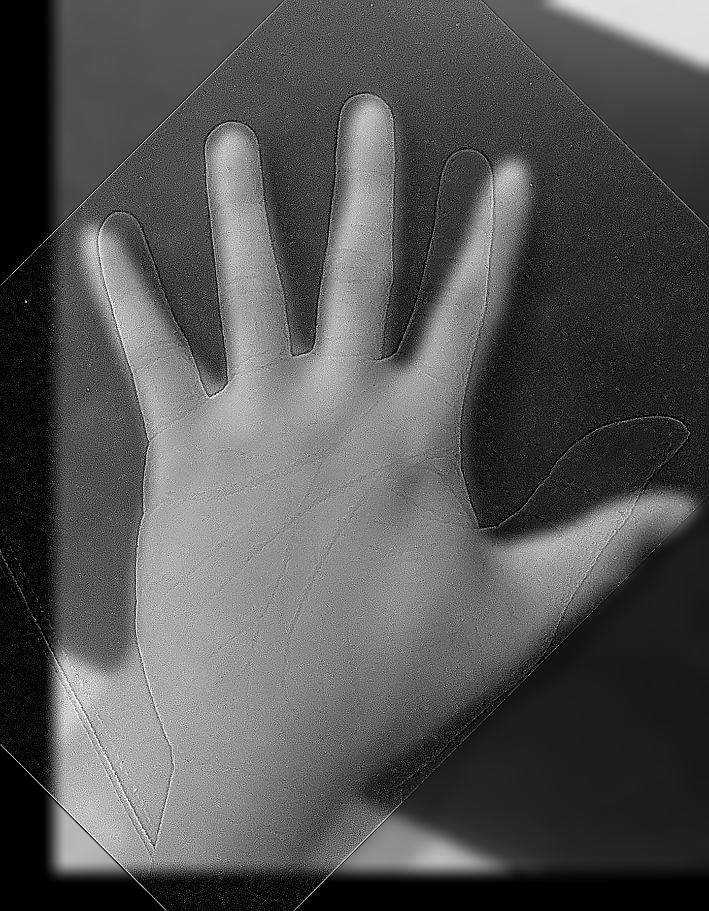
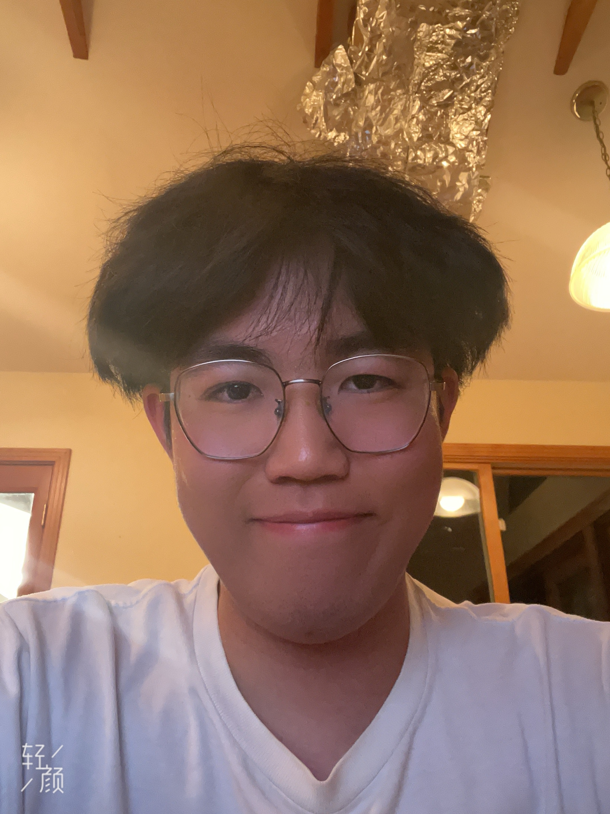
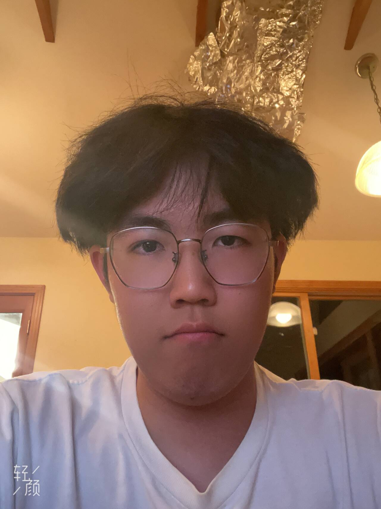
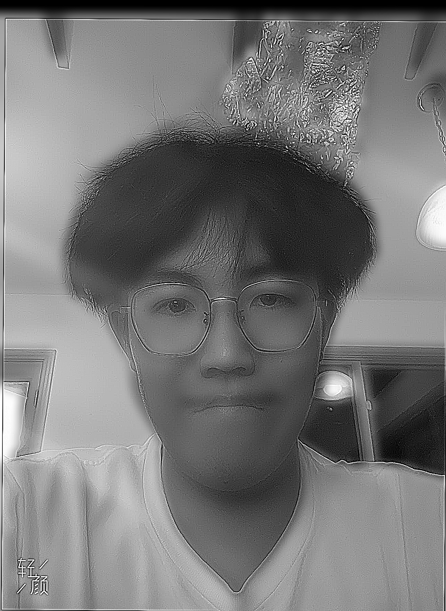
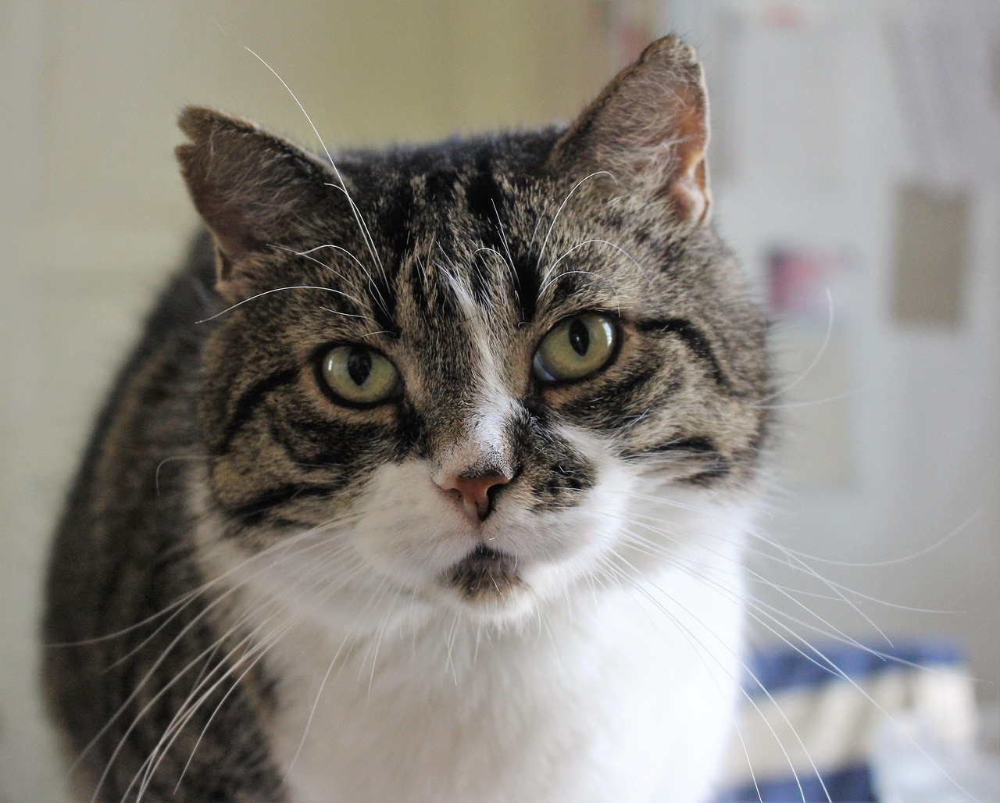
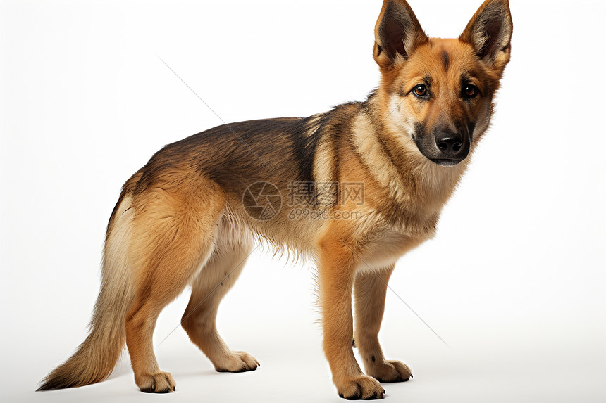
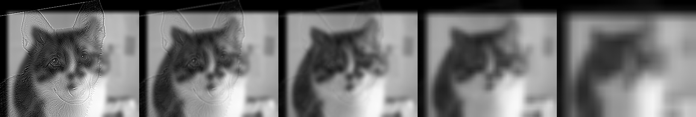
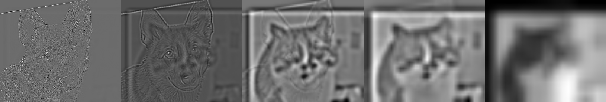
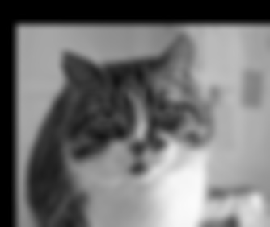
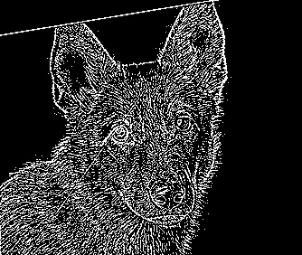
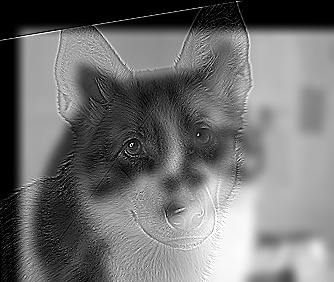
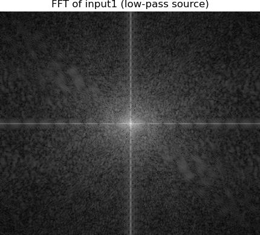
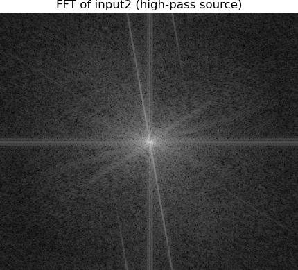
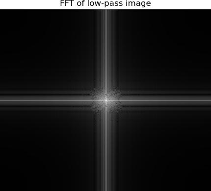
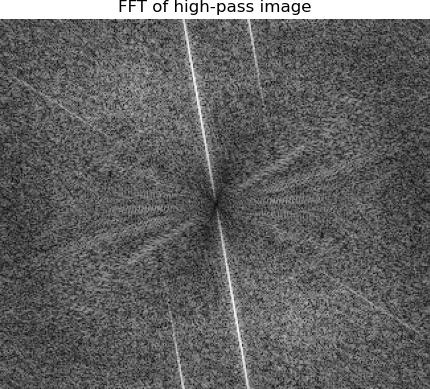
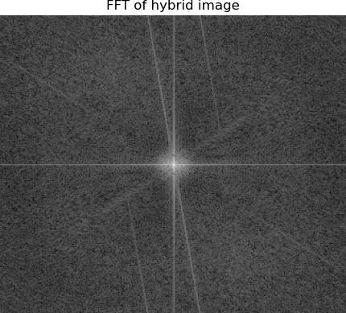
2.3 Gaussian & Laplacian Stacks (Oraple)
Implement Gaussian and Laplacian stacks (no subsampling) from scratch and apply them to the Apple+Orange example (Oraple). Save stacks and visualize each level (both Gaussian and Laplacian).
Code (stacks)
import cv2
import numpy as np
import matplotlib.pyplot as plt
def gaussian_stack(img, levels):
g_stk = [img.copy()]
for i in range(levels):
img = cv2.GaussianBlur(img, (25, 25), 50)
g_stk.append(img)
return g_stk
def laplacian_stack(img, levels):
img = img.astype(np.float32)
g_stk = [img.copy()]
for i in range(levels):
img = cv2.GaussianBlur(img, (25,25), 50)
g_stk.append(img.astype(np.float32))
l_stk = []
for i in range(levels):
lap = g_stk[i] - g_stk[i+1]
l_stk.append(lap)
l_stk.append(g_stk[-1])
return l_stk
def show_stack(stack, title, gray=False):
levels = len(stack)
plt.figure(figsize=(15, 3))
for i, img in enumerate(stack):
plt.subplot(1, levels, i+1)
if gray:
max_abs = max(abs(img.min()), abs(img.max()))
img_vis = 127 + (img / max_abs) * 127
img_vis = np.clip(img_vis, 0, 255).astype(np.uint8)
plt.imshow(img_vis, cmap='gray')
else:
plt.imshow(img.astype(np.uint8))
plt.axis('off')
plt.title(f'Level {i}')
plt.suptitle(title)
plt.show()
# ================= Load Images ==================
apple = cv2.imread("apple.jpeg")
orange = cv2.imread("orange.jpeg")
h = min(apple.shape[0], orange.shape[0])
w = min(apple.shape[1], orange.shape[1])
apple = cv2.resize(apple, (w, h))
orange = cv2.resize(orange, (w, h))
apple = cv2.cvtColor(apple, cv2.COLOR_BGR2RGB)
orange = cv2.cvtColor(orange, cv2.COLOR_BGR2RGB)
levels = 6
gas_apple = gaussian_stack(apple, levels)
gas_orange = gaussian_stack(orange, levels)
lap_apple = laplacian_stack(apple, levels)
lap_orange = laplacian_stack(orange, levels)
show_stack(gas_apple, "Apple Gaussian Stack")
show_stack(gas_orange, "Orange Gaussian Stack")
show_stack(lap_apple, "Apple Laplacian Stack", gray=True)
show_stack(lap_orange, "Orange Laplacian Stack", gray=True)
# ================ Make Mask ===================
w_grad = 100
x_start = w//2 - w_grad//2
x_end = x_start + w_grad
mask = np.zeros((h, w), dtype=np.float32)
mask[:, :x_start] = 1
mask[:, x_end:] = 0
mask[:, x_start:x_end] = np.linspace(1, 0, w_grad, dtype=np.float32)
plt.figure(figsize=(8,2))
plt.imshow(mask, cmap='gray')
plt.axis('off')
plt.title("Base Mask (Gradient Window)")
plt.show()
# =============== Gaussian stack for Mask =================
def gaussian_stack_mask(mask, levels):
g_stk = [mask.astype(np.float32)]
for i in range(levels):
blurred = cv2.GaussianBlur(g_stk[-1], (25,25), 50)
g_stk.append(blurred.astype(np.float32))
return g_stk
mask_stack = gaussian_stack_mask(mask, levels)
show_stack(mask_stack, "Mask Gaussian Stack", gray=True)
# =============== Blend Each Layer ===================
blended_stack = []
levels = len(lap_apple)
plt.figure(figsize=(15, levels*3))
for i, (l1, l2, m) in enumerate(zip(lap_apple, lap_orange, mask_stack)):
if len(l1.shape) == 3:
m3 = np.repeat(m[:, :, np.newaxis], 3, axis=2)
else:
m3 = m
blended_layer = l1 * m3 + l2 * (1 - m3)
blended_stack.append(blended_layer)
max_abs = max(abs(blended_layer.min()), abs(blended_layer.max()))
fused_vis = 127 + (blended_layer / max_abs) * 127
fused_vis = np.clip(fused_vis, 0, 255).astype(np.uint8)
apple_only = l1 * m3
apple_vis = 127 + (apple_only / max_abs) * 127
apple_vis = np.clip(apple_vis, 0, 255).astype(np.uint8)
orange_only = l2 * (1 - m3)
orange_vis = 127 + (orange_only / max_abs) * 127
orange_vis = np.clip(orange_vis, 0, 255).astype(np.uint8)
plt.subplot(levels, 3, i*3 + 1)
plt.imshow(apple_vis, cmap='gray')
plt.axis('off')
if i == 0: plt.title("Apple Only")
plt.subplot(levels, 3, i*3 + 2)
plt.imshow(orange_vis, cmap='gray')
plt.axis('off')
if i == 0: plt.title("Orange Only")
plt.subplot(levels, 3, i*3 + 3)
plt.imshow(fused_vis, cmap='gray')
plt.axis('off')
if i == 0: plt.title("Blended Layer")
plt.suptitle("Each Laplacian Layer after Multi-Scale Mask Fusion")
plt.show()
# =============== Reconstruct ===================
final_img = np.zeros_like(blended_stack[0], dtype=np.float32)
for layer in blended_stack:
final_img += layer.astype(np.float32)
final_img = np.clip(final_img, 0, 255).astype(np.uint8)
plt.figure(figsize=(6,6))
plt.imshow(final_img)
plt.axis('off')
plt.title("Final Blended Image (Oraple)")
plt.show()Visualization


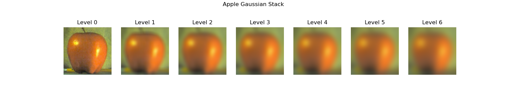
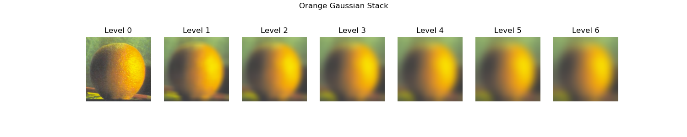
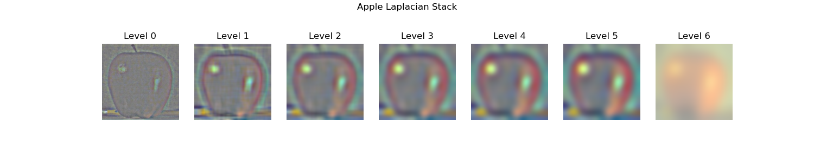
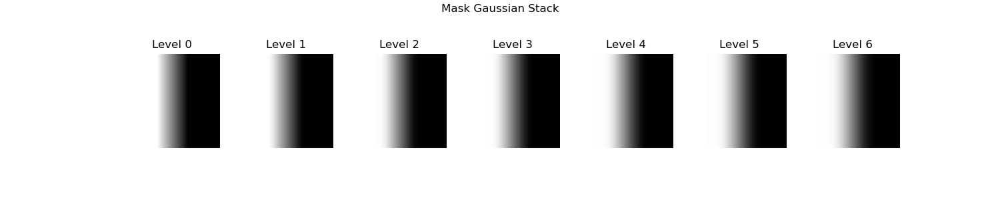
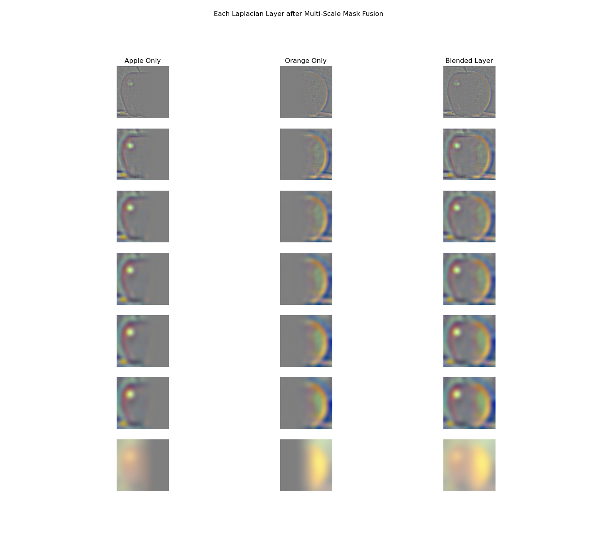
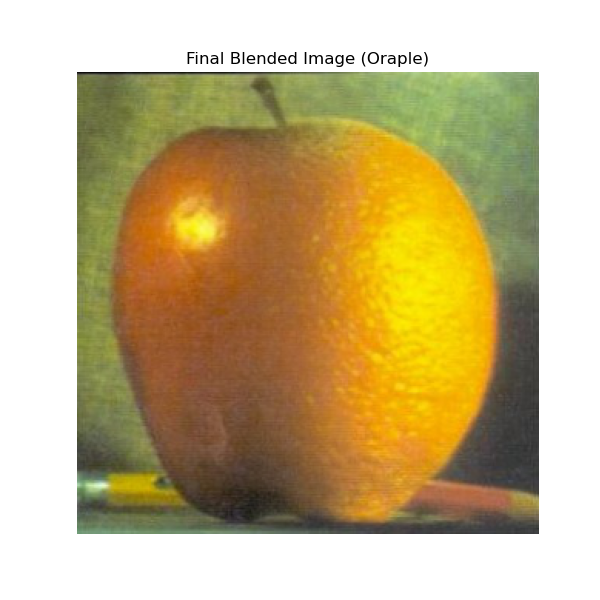
2.4 Multi-resolution Blending / Oraple
Implement multi-resolution blending using the stacks. Two separate methods are supported in this project:
- Classic mask Gaussian stack (mask blurred differently per level) — the Burt & Adelson approach.
- User-defined per-frequency overlap windows — using different mask radii / widths for different Laplacian levels (your custom approach).
Code (multi-resolution blending of Joker Xue, using the same mask as oraple)
import cv2
import numpy as np
import matplotlib.pyplot as plt
def gaussian_stack(img, levels):
g_stk = [img.copy()]
for i in range(levels):
img = cv2.GaussianBlur(img, (25, 25), 30)
g_stk.append(img)
return g_stk
def laplacian_stack(img, levels):
img = img.astype(np.float32)
g_stk = [img.copy()]
for i in range(levels):
img = cv2.GaussianBlur(img, (25,25), 30)
g_stk.append(img.astype(np.float32))
l_stk = []
for i in range(levels):
lap = g_stk[i] - g_stk[i+1]
l_stk.append(lap)
l_stk.append(g_stk[-1])
return l_stk
def show_stack(stack, title, gray=False):
levels = len(stack)
plt.figure(figsize=(15, 3))
for i, img in enumerate(stack):
plt.subplot(1, levels, i+1)
if gray:
max_abs = max(abs(img.min()), abs(img.max()))
img_vis = 127 + (img / max_abs) * 127
img_vis = np.clip(img_vis, 0, 255).astype(np.uint8)
plt.imshow(img_vis, cmap='gray')
else:
plt.imshow(img.astype(np.uint8))
plt.axis('off')
plt.title(f'Level {i}')
plt.suptitle(title)
plt.show()
# ================= Load Images ==================
apple = cv2.imread("joker_left.jpg")
orange = cv2.imread("joker_right.jpg")
h = min(apple.shape[0], orange.shape[0])
w = min(apple.shape[1], orange.shape[1])
apple = cv2.resize(apple, (w, h))
orange = cv2.resize(orange, (w, h))
apple = cv2.cvtColor(apple, cv2.COLOR_BGR2RGB)
orange = cv2.cvtColor(orange, cv2.COLOR_BGR2RGB)
levels = 6
gas_apple = gaussian_stack(apple, levels)
gas_orange = gaussian_stack(orange, levels)
lap_apple = laplacian_stack(apple, levels)
lap_orange = laplacian_stack(orange, levels)
show_stack(gas_apple, "Young Gaussian Stack")
show_stack(gas_orange, "Now Gaussian Stack")
show_stack(lap_apple, "Young Laplacian Stack", gray=True)
show_stack(lap_orange, "Now Laplacian Stack", gray=True)
# ================ Make Mask ===================
w_grad = 100
x_start = w//2 - w_grad//2
x_end = x_start + w_grad
mask = np.zeros((h, w), dtype=np.float32)
mask[:, :x_start] = 1
mask[:, x_end:] = 0
mask[:, x_start:x_end] = np.linspace(1, 0, w_grad, dtype=np.float32)
plt.figure(figsize=(8,2))
plt.imshow(mask, cmap='gray')
plt.axis('off')
plt.title("Base Mask (Gradient Window)")
plt.show()
# =============== Gaussian stack for Mask =================
def gaussian_stack_mask(mask, levels):
g_stk = [mask.astype(np.float32)]
for i in range(levels):
blurred = cv2.GaussianBlur(g_stk[-1], (25,25), 50)
g_stk.append(blurred.astype(np.float32))
return g_stk
mask_stack = gaussian_stack_mask(mask, levels)
show_stack(mask_stack, "Mask Gaussian Stack", gray=True)
# =============== Blend Each Layer ===================
blended_stack = []
levels = len(lap_apple)
plt.figure(figsize=(15, levels*3))
for i, (l1, l2, m) in enumerate(zip(lap_apple, lap_orange, mask_stack)):
if len(l1.shape) == 3:
m3 = np.repeat(m[:, :, np.newaxis], 3, axis=2)
else:
m3 = m
blended_layer = l1 * m3 + l2 * (1 - m3)
blended_stack.append(blended_layer)
max_abs = max(abs(blended_layer.min()), abs(blended_layer.max()))
fused_vis = 127 + (blended_layer / max_abs) * 127
fused_vis = np.clip(fused_vis, 0, 255).astype(np.uint8)
apple_only = l1 * m3
apple_vis = 127 + (apple_only / max_abs) * 127
apple_vis = np.clip(apple_vis, 0, 255).astype(np.uint8)
orange_only = l2 * (1 - m3)
orange_vis = 127 + (orange_only / max_abs) * 127
orange_vis = np.clip(orange_vis, 0, 255).astype(np.uint8)
plt.subplot(levels, 3, i*3 + 1)
plt.imshow(apple_vis, cmap='gray')
plt.axis('off')
if i == 0: plt.title("1 Only")
plt.subplot(levels, 3, i*3 + 2)
plt.imshow(orange_vis, cmap='gray')
plt.axis('off')
if i == 0: plt.title("2 Only")
plt.subplot(levels, 3, i*3 + 3)
plt.imshow(fused_vis, cmap='gray')
plt.axis('off')
if i == 0: plt.title("Blended Layer")
plt.suptitle("Each Laplacian Layer after Multi-Scale Mask Fusion")
plt.show()
# =============== Reconstruct ===================
final_img = np.zeros_like(blended_stack[0], dtype=np.float32)
for layer in blended_stack:
final_img += layer.astype(np.float32)
final_img = np.clip(final_img, 0, 255).astype(np.uint8)
plt.figure(figsize=(6,6))
plt.imshow(final_img)
plt.axis('off')
plt.title("Final Blended Image")
plt.show()Visualization & Examples
Show per-level apple-only, orange-only and blended visuals, and final reconstruction. Provide at least two creative blends (irregular masks recommended).
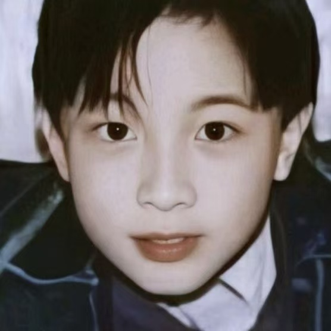
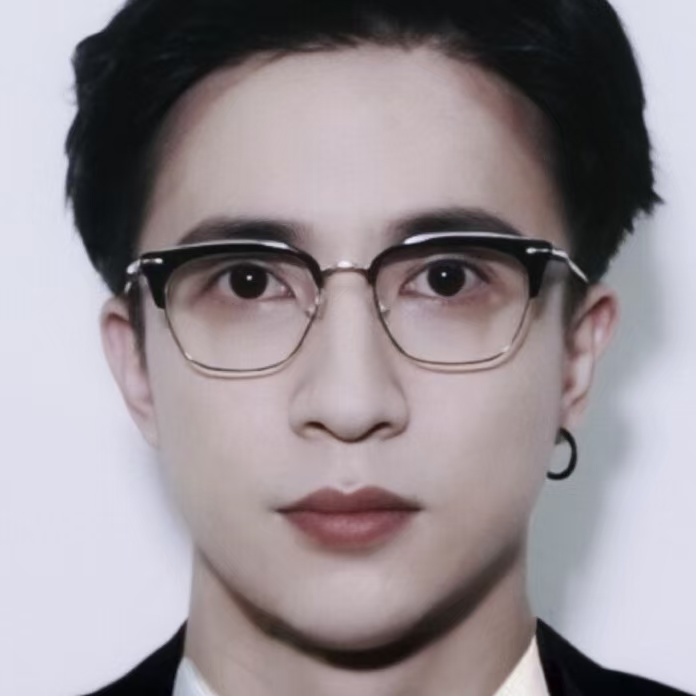
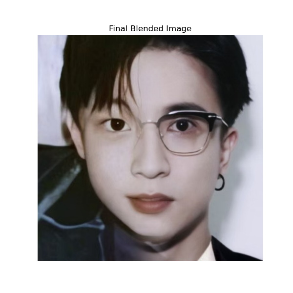
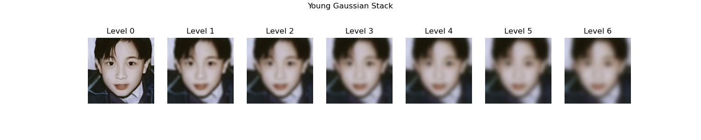
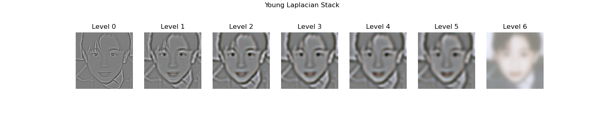
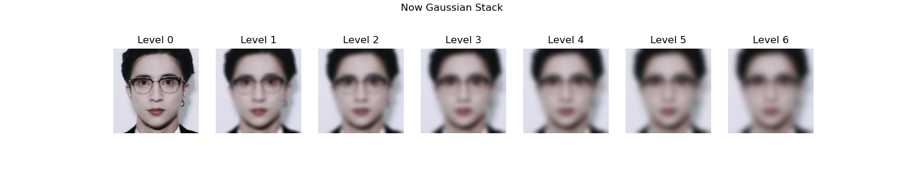
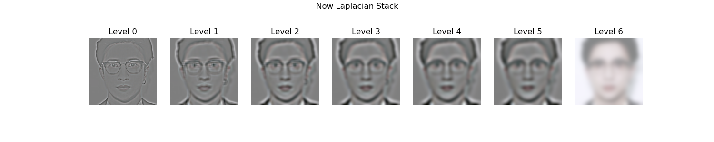
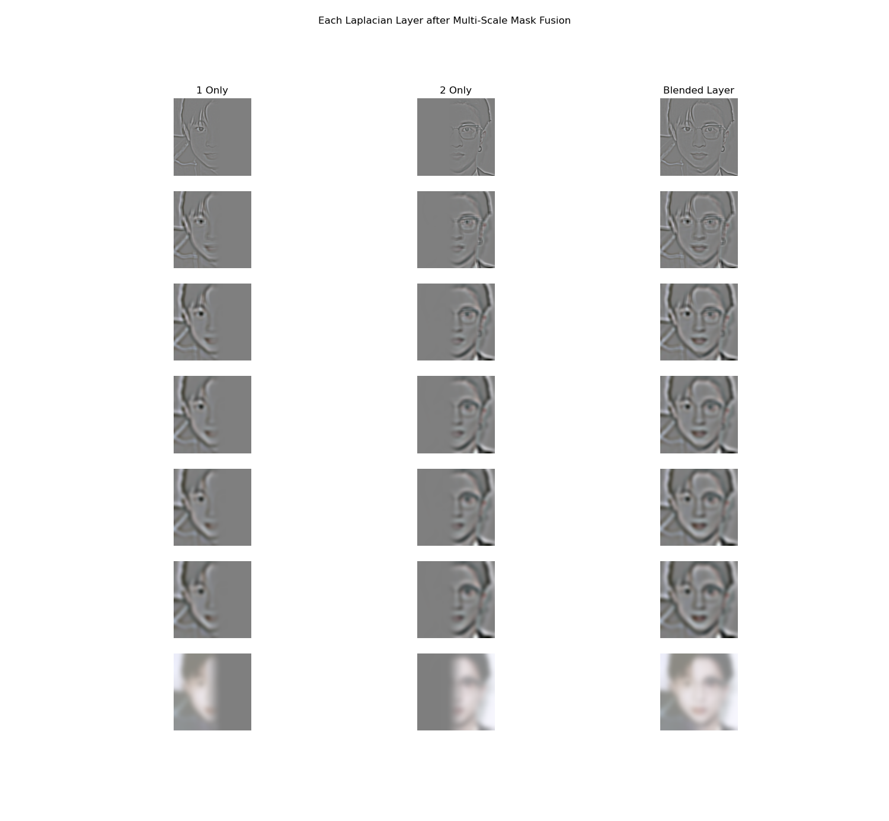
Code (multi-resolution blending of mouthhand, using a different mask)
import cv2
import numpy as np
import matplotlib.pyplot as plt
def gaussian_stack(img, levels):
g_stk = [img.copy()]
for i in range(levels):
img = cv2.GaussianBlur(img, (51, 51), 100)
g_stk.append(img)
return g_stk
def laplacian_stack(img, levels):
img = img.astype(np.float32)
g_stk = [img.copy()]
for i in range(levels):
img = cv2.GaussianBlur(img, (51,51), 100)
g_stk.append(img.astype(np.float32))
l_stk = []
for i in range(levels):
lap = g_stk[i] - g_stk[i+1]
l_stk.append(lap)
l_stk.append(g_stk[-1])
return l_stk
def show_stack(stack, title, gray=False):
levels = len(stack)
plt.figure(figsize=(15, 3))
for i, img in enumerate(stack):
plt.subplot(1, levels, i+1)
if gray:
max_abs = max(abs(img.min()), abs(img.max()))
img_vis = 127 + (img / max_abs) * 127
img_vis = np.clip(img_vis, 0, 255).astype(np.uint8)
plt.imshow(img_vis, cmap='gray')
else:
plt.imshow(img.astype(np.uint8))
plt.axis('off')
plt.title(f'Level {i}')
plt.suptitle(title)
plt.show()
apple = cv2.imread("mouth.jpg")
orange = cv2.imread("hand.jpg")
h = min(apple.shape[0], orange.shape[0])
w = min(apple.shape[1], orange.shape[1])
apple = cv2.resize(apple, (w, h))
orange = cv2.resize(orange, (w, h))
apple = cv2.cvtColor(apple, cv2.COLOR_BGR2RGB)
orange = cv2.cvtColor(orange, cv2.COLOR_BGR2RGB)
levels = 6
gas_apple = gaussian_stack(apple, levels)
gas_orange = gaussian_stack(orange, levels)
lap_apple = laplacian_stack(apple, levels)
lap_orange = laplacian_stack(orange, levels)
show_stack(gas_apple, "Gaussian Stack 1")
show_stack(gas_orange, "Gaussian Stack 2")
show_stack(lap_apple, "Laplacian Stack 1", gray=True)
show_stack(lap_orange, "Laplacian Stack 2", gray=True)
def create_center_mask(shape, r_inner=30, r_outer=60, mode='linear'):
h, w = shape
y, x = np.ogrid[:h, :w]
cx, cy = w // 2, h // 2
d = np.sqrt((x - cx) ** 2 + (y - cy) ** 2)
mask = np.zeros_like(d, dtype=np.float32)
if mode == 'linear':
mask = np.clip((r_outer - d) / (r_outer - r_inner), 0, 1)
elif mode == 'gaussian':
sigma = (r_outer - r_inner) / 2
center = (r_inner + r_outer) / 2
mask = np.exp(-((d - r_inner) ** 2) / (2 * sigma ** 2))
mask[d < r_inner] = 1
mask[d > r_outer] = 0
else:
raise ValueError("mode must be 'linear' or 'gaussian'")
mask[d <= r_inner] = 1
mask[d >= r_outer] = 0
return mask
def create_elliptical_mask(shape, r_inner=0.3, r_outer=0.5, a=1.0, b=1.0, mode='linear'):
h, w = shape
y, x = np.ogrid[:h, :w]
cx, cy = w // 2, h // 2
dx = (x - cx) / (a * w / 2)
dy = (y - cy) / (b * h / 2)
d = np.sqrt(dx**2 + dy**2)
mask = np.zeros_like(d, dtype=np.float32)
if mode == 'linear':
mask = np.clip((r_outer - d) / (r_outer - r_inner), 0, 1)
elif mode == 'gaussian':
sigma = (r_outer - r_inner) / 2
mask = np.exp(-((d - r_inner) ** 2) / (2 * sigma ** 2))
else:
raise ValueError("mode must be 'linear' or 'gaussian'")
mask[d <= r_inner] = 1
mask[d >= r_outer] = 0
return mask
mask_gray = create_elliptical_mask((h, w), r_inner=0.2, r_outer=0.5, a=1, b=0.6, mode='linear')
mask_stack = gaussian_stack(mask_gray, levels)
mask_stack = [m.astype(np.float32) / m.max() for m in mask_stack]
plt.figure(figsize=(15,3))
for i, m in enumerate(mask_stack):
plt.subplot(1, levels+1, i+1)
plt.imshow(m, cmap='gray')
plt.axis('off')
plt.title(f'Mask {i}')
plt.suptitle("Gaussian Mask Stack")
plt.show()
blended_stack = []
levels = len(lap_apple)
plt.figure(figsize=(15, levels*3))
for i, (l1, l2, m) in enumerate(zip(lap_apple, lap_orange, mask_stack)):
if len(l1.shape) == 3:
m3 = np.repeat(m[:, :, np.newaxis], 3, axis=2)
else:
m3 = m
blended_layer = l1 * m3 + l2 * (1 - m3)
blended_stack.append(blended_layer)
max_abs = max(abs(blended_layer.min()), abs(blended_layer.max()))
fused_vis = 127 + (blended_layer / max_abs) * 127
fused_vis = np.clip(fused_vis, 0, 255).astype(np.uint8)
apple_only = l1 * m3
apple_vis = 127 + (apple_only / max_abs) * 127
apple_vis = np.clip(apple_vis, 0, 255).astype(np.uint8)
orange_only = l2 * (1 - m3)
orange_vis = 127 + (orange_only / max_abs) * 127
orange_vis = np.clip(orange_vis, 0, 255).astype(np.uint8)
plt.subplot(levels, 3, i*3 + 1)
plt.imshow(apple_vis, cmap='gray')
plt.axis('off')
if i == 0: plt.title("1 Only")
plt.subplot(levels, 3, i*3 + 2)
plt.imshow(orange_vis, cmap='gray')
plt.axis('off')
if i == 0: plt.title("2 Only")
plt.subplot(levels, 3, i*3 + 3)
plt.imshow(fused_vis, cmap='gray')
plt.axis('off')
if i == 0: plt.title("Blended Layer")
plt.suptitle("Each Laplacian Layer with Mask Stack Fusion")
plt.show()
final_img = np.zeros_like(blended_stack[0], dtype=np.float32)
for layer in blended_stack:
final_img += layer.astype(np.float32)
final_img = np.clip(final_img, 0, 255).astype(np.uint8)
plt.figure(figsize=(6,6))
plt.imshow(final_img)
plt.axis('off')
plt.title("Final Blended Image with Mask Stack")
plt.show()Visualization & Examples
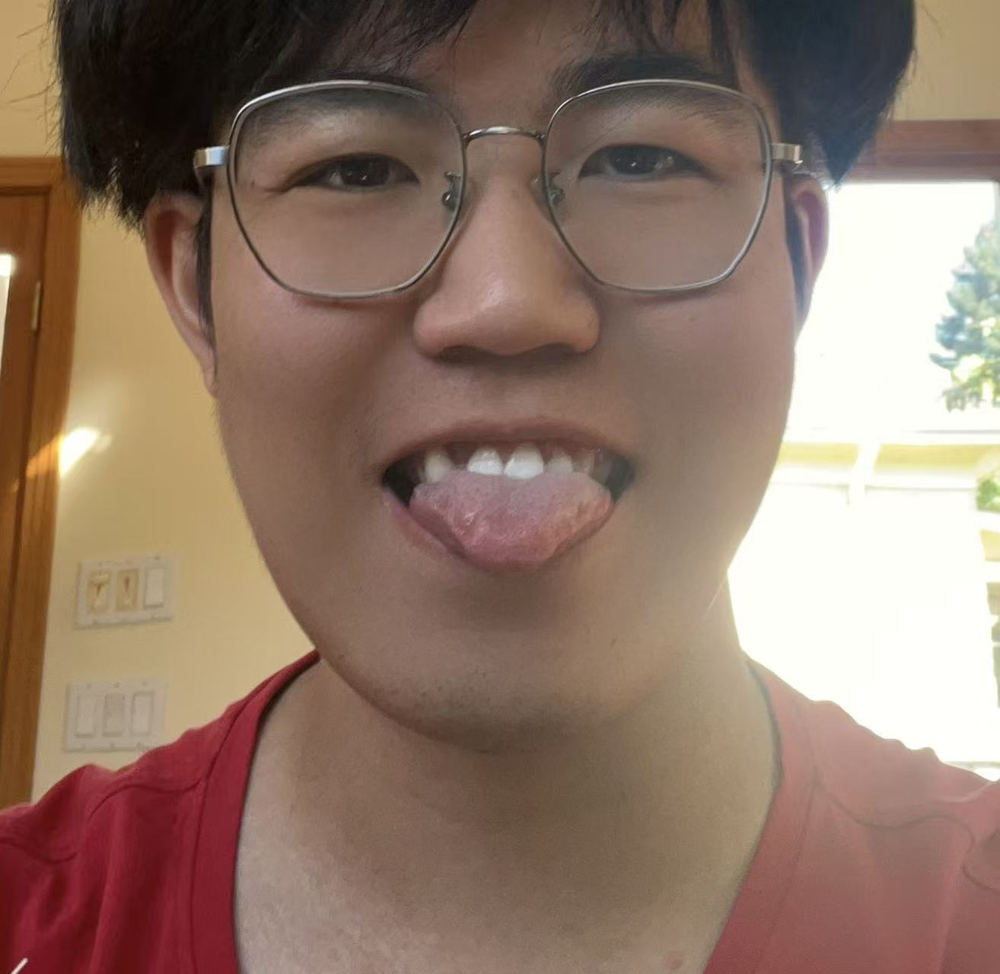
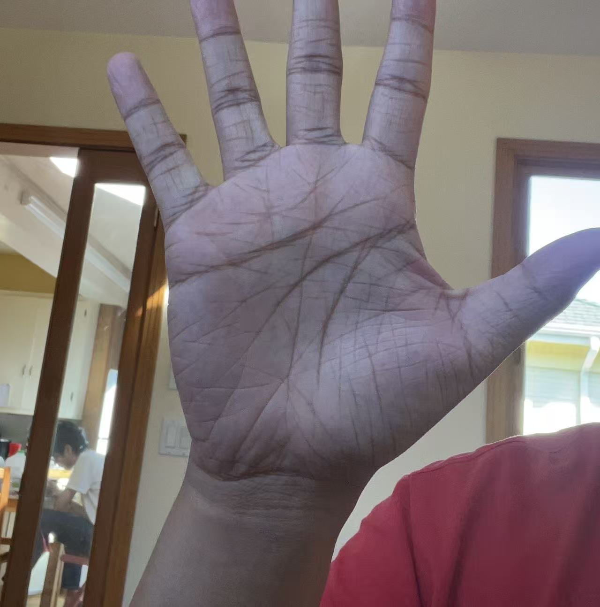
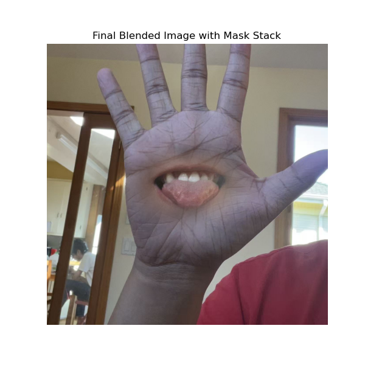
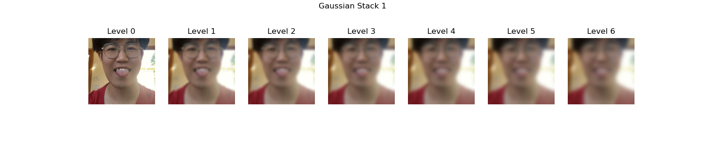
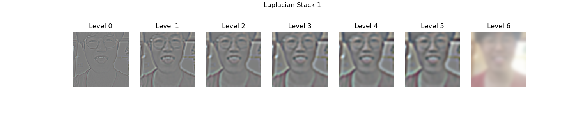
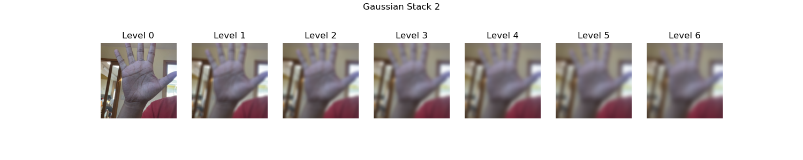
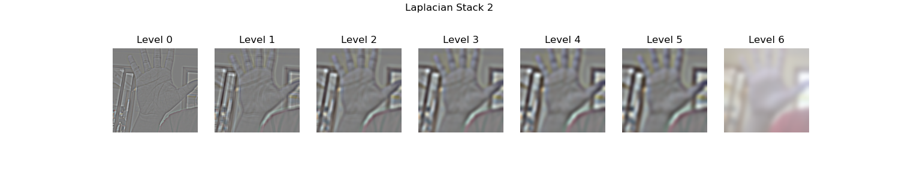
My Work — Summary & Details
Below is a description of the work I performed for this project. I list each experiment, the key idea, and references to the images and code.
1) Convolution implementations
I implemented convolution from scratch in two versions: (a) four nested loops, and (b) an optimized two-loop variant. I compared speed to the library function scipy.signal.convolve2d and confirmed the library implementation runs significantly faster. I used my own photo for testing, computed gradients $dx$ and $dy$, and extracted gradient magnitude.
2) Smoothing before edge extraction
I blurred my photo using a Gaussian filter before extracting edges; the smoothed version produced substantially less noisy edge maps. I also convolved two kernels to combine filters so that the image only needs a single convolution to obtain the same output.
3) Image enhancement (Unsharp)
I implemented unsharp masking by subtracting the blurred image (high-frequency) and adding a scaled version back to the original. I derived an equivalent single convolution kernel to perform sharpening in one pass. I applied this to the Taj Mahal example and my own photo, and observed clear sharpening without severe artifacts.
4) Image mixing (Hybrid / Morphing)
I created a series of hybrid images. One example blends high-frequency details of a cat with the low-frequency content of a human portrait so that from a distance you see a human, up close a cat. I additionally tried mixing palm/face and smile/sad expression pairs. Frequency-domain visualizations (Fourier magnitude) are provided for the example of cat and dog.
5) Gaussian & Laplacian stacks and Oraple
I implemented Gaussian and Laplacian stacks (no subsampling) and recreated the oraple (apple+orange) results from the textbook. I also blended:
- Hand + mouth (center circular mask) — “mouth in the palm” surreal result.
- Joker Xue childhood + recent photos — left-right face blend.
Discussion & Lessons Learned
The major lessons include: (1) careful handling of data types and negative residuals when building Laplacian stacks (use float32), (2) why multi-scale blending is superior to a single mask (different frequency bands need different transition widths),
and (3) performance trade-offs between hand-coded convolution and optimized library routines.